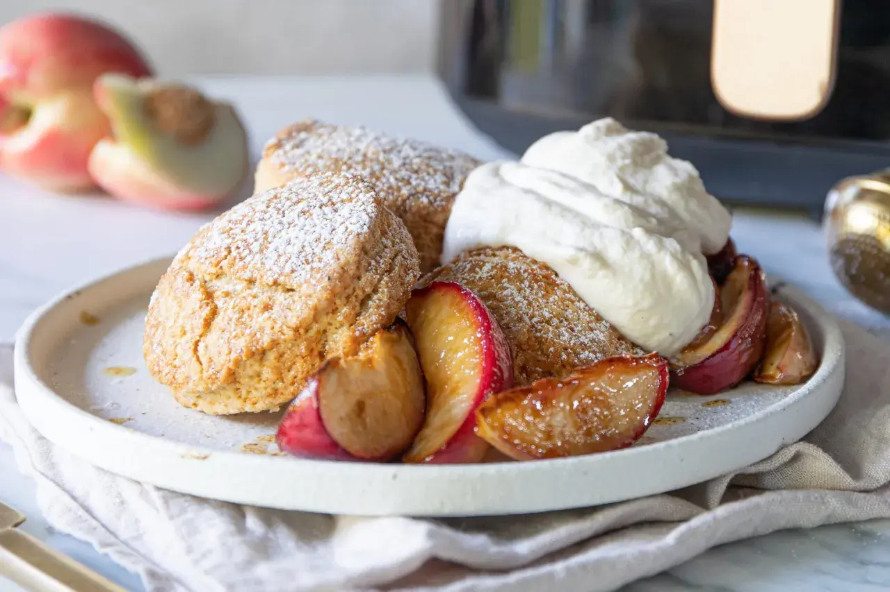

Så bakar du frasiga scones med mjuk kärna

Det här receptet ger åtta mindre scones eller fyra större, lagom till frukost eller eftermiddagsfika. Jag
använder mjölk för en klassisk smak, men filmjölk fungerar också om du vill ha ett saftigare och lite
syrligare resultat.
- Vetemjöl 4 dl
- Bakpuver 2 tsk
- Salt 0.5 tsk
- kallt smör 50 g
- Mjölk 2 dl
Gör så här
- Sätt ugnen på 250 grader över- och undervärme. Klä en plåt med bakplåtspapper.
- Blanda vetemjöl, bakpulver och salt i en bunke.
- Skär det kalla smöret i små tärningar och nyp snabbt ihop det med mjölblandningen. Blandningen ska likna
grova smulor.
- Häll i mjölken och rör försiktigt tills degen precis går ihop. Överarbeta inte degen.
- Stjälp upp degen på ett lätt mjölat bakbord. Platta ut den till cirka 2 cm tjocklek och skär i fyra
delar, eller tryck ut åtta rundlar med ett mått.
- Grädda mitt i ugnen i 10-12 minuter, tills ytan är gyllenbrun.
- Låt sconesen vila i några minuter och servera dem sedan varma.
Jag föredrar att dela sconesen med händerna i stället för att skära dem med kniv. Det ger en rustik yta och
gör det lättare att fylla dem med smör, ost och marmelad medan de fortfarande är varma.